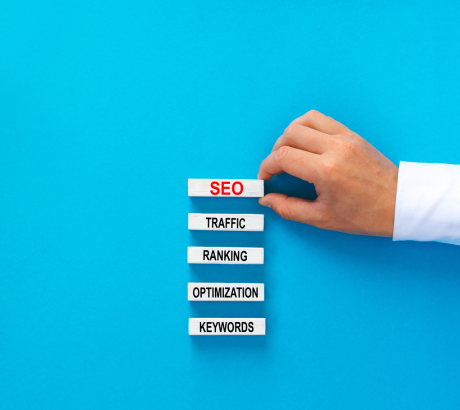

Search Engine Optimization
Seo is the strategy which is improving the search engine ranking of your website or web page when audience search for your related keywords. Our iTSoftexpert team focus on analyzes key factores and implements on targeting strategies to improve your website on-page, off page and technical factors, also ensuring it ranks higher in the SERP and attract the organic traffic
TAKE YOUR BUSINESS TO THE HIGH LEVEL
iTSoftexpert with ideal strength to increase your website on top rank and increase organic traffic. Our expert team provide you to technical strategies which focuses on improvong the quantity and quality of organic traffic to your website , while also enhancing your brand and taking your business on next level in internet marketing.
What We Do


Keyword Research
A crucial component of SEO is keyword research, which is identifying and evaluating the terms and expressions consumers use to look for goods, services, or business-related information. At ITSoftExpert, we are aware that selecting the appropriate keywords is crucial to increasing website traffic and connecting with your target market. In-depth keyword research is carried out by our team to determine which high-traffic and relevant keywords are best for your company. In order to ensure that the traffic directed to your website is highly targeted and has a higher chance of converting into consumers, we search for keywords that are not only popular but also closely related to your goods or services. We examine several keyword kinds, such as long-tail keywords—which are more specialized and have less competition but can draw in more quality leads—and short-tail keywords, which are more general and frequently very competitive. We assist you in producing content that appeals to your audience by helping you comprehend the meaning behind these keywords in searches. Your website is better positioned to rank higher in search results, draw more visitors, and expand your business with ITSoftExpert's proficiency in keyword research.
Local SEO
Search Engine Optimization is an important part of any business’s online presence. It helps to ensure that customers can find your business when they search for relevant keywords in your area .Partnering with an ITsoftexpert professional can help you to maximize the benefits ensure that your business is seen by the right audience. A Digital Marketing agency ITsoftexpert professional can also help you to track and analyze your SEO performance. They can provide you with detailed reports that show how your Search Engine Optimization efforts are performing and help you to identify areas for improvement, helping you to optimize your strategies and achieve the best result.

On-Page SEO
Optimizing the elements on your website to increase its exposure on search engines and enhance user experience is known as on-page SEO. At ITSoftExpert, our main goal is to make sure that every element of your website is optimized to draw in and hold the attention of users. This entails polishing your writing to incorporate pertinent keywords that prospective buyers are using to find you. We ensure that your meta descriptions, headings, and titles are enticing and assist search engines comprehend the purpose of your page. We also work to optimize the structure of your website, making it simple to use and guaranteeing experience for users and makingthat all pertinent information is available. This includes making photos as pixel-perfect and responsive as possible across all platforms. By improving the user experience and making the content more suitable, on-page SEO helps your website rank higer in SERP’s . our team at ITSoftExpert employs tried-and-true methods and industry best practices.
Off-Page SEO
In order to increase your website's exposure in search engine results, off-page SEO focuses on enhancing your website's authority and reputation outside of your own website. in ITSoftExpert, we're experts in developing plans that increase the legitimacy of your website and increase traffic from outside sources. To do this, you must create backlinks to your website from other reliable websites, or high-quality backlinks. Search engines receive these hyperlinks as endorsements, indicating to them that your website is reliable and pertinent. In order to interact with your audience and raise brand awareness, we also work on social media website promotion. Furthermore, we oversee your online visibility by making sure that your company's information is accurate and consistent throughout directories and review platforms. concentrating on these off-page.By raising your website's authority and search engine rankings, digital marketing agency ITSoftExpert helps you draw in more visitors and prospective clients. With the help of our strategy, your website will not only rank higher but also develop a solid online reputation, which will help your company stand out in the congested digital market.